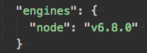
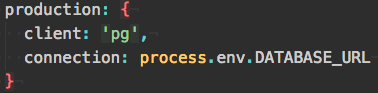
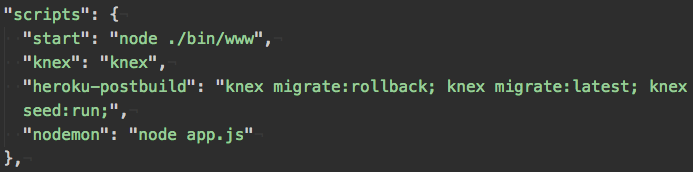
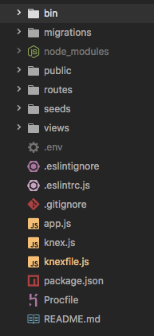

- heroku apps:create username-kittensblog
- node -v (get the node version)
- In package.json, put in the node version like this:

- heroku addons:create heroku-postgresql
- In knexfile.js, add the config for the production environment:

- In package.json, add these scripts:

- You can put all your knex migration and seed scripts in the heroku-postbuild.
- node app.js runs the file wherever you've initialized your express server/defined your routes. Sometimes people name that file server.js whence you would change the script to node server.js instead.
- echo 'web: node app.js' > Procfile
- bash -c 'heroku config:set SESSION_SECRET=$(openssl rand -hex 64)'
- git add .
- git commit -m "yah heroku deployment do it"
- git push heroku master
- heroku pg:psql (Check to see that your database is seeded)
- Open your deployed url site in Google Chrome.
- heroku logs (If something weird is happening)
Express File System
